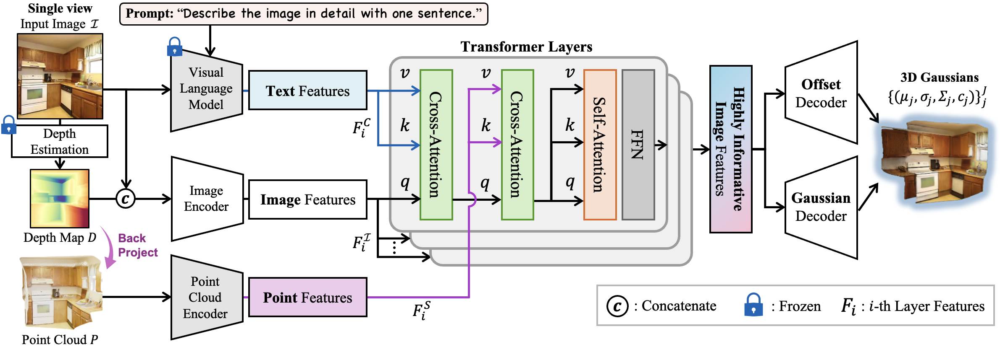
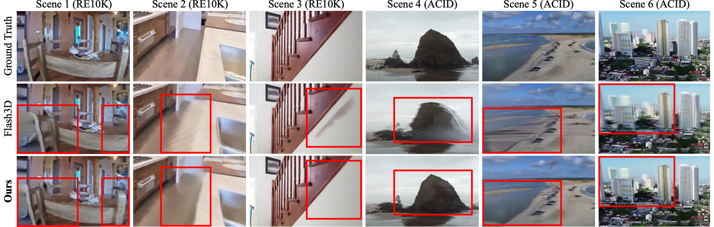

CATSplat takes an image and predicts 3D Gaussian primitives to construct a scene-representative 3D radiance field in a single
forward pass.
In this paradigm, our primary goal is to go beyond the finite knowledge inherent in a single image with our two
innovative priors.
Through cross-attention layers, we enhance image features to be highlyinformative by incorporating valuable
insights: contextual cues from text features, and spatial cues from 3D point features.
 CATSplat
CATSplat
Context-Aware Transformer with Spatial Guidance for Generalizable 3D Gaussian Splatting from A Single-View Image
Qualitative Results
RealEsate10K
ACID
NYU
Abstract
TL;DR: We present CATSplat, a novel generalizable transformer-based framework designed to break through the inherent constraints in monocular settings.
Recently, generalizable feed-forward methods based on 3D Gaussian Splatting have gained significant attention for their potential to reconstruct 3D scenes using finite resources. These approaches create a 3D radiance field, parameterized by per-pixel 3D Gaussian primitives, from just a few images in a single forward pass. However, unlike multi-view methods that benefit from cross-view correspondences, 3D scene reconstruction with a single-view image remains an underexplored area. In this work, we introduce CATSplat, a novel generalizable transformer-based framework designed to break through the inherent constraints in monocular settings. First, we propose leveraging textual guidance from a visual-language model to complement insufficient information from a single image. By incorporating scene-specific contextual details from text embeddings through cross-attention, we pave the way for context-aware 3D scene reconstruction beyond relying solely on visual cues. Moreover, we advocate utilizing spatial guidance from 3D point features toward comprehensive geometric understanding under single-view settings. With 3D priors, image features can capture rich structural insights for predicting 3D Gaussians without multi-view techniques. Extensive experiments on large-scale datasets demonstrate the state-of-the-art performance of CATSplat in single-view 3D scene reconstruction with high-quality novel view synthesis.
Architecture

Qualitative Comparisons

Qualitative comparison of novel view synthesis between Flash3D and ours with
Ground Truth on the novel veiw frames from RE10k and ACID (cross-dataset).
RealEstate10K

RealEstate10K

ACID

KITTI

BibTeX
@article{roh2024catsplat,
title={CATSplat: Context-Aware Transformer with Spatial Guidance for Generalizable 3D Gaussian Splatting from A Single-View Image},
author={Roh, Wonseok and Jung, Hwanhee and Kim, Jong Wook and Lee, Seunggwan and Yoo, Innfarn and Lugmayr, Andreas and Chi, Seunggeun and Ramani, Karthik and Kim, Sangpil},
journal={arXiv preprint arXiv:2412.12906},
year={2024}
}